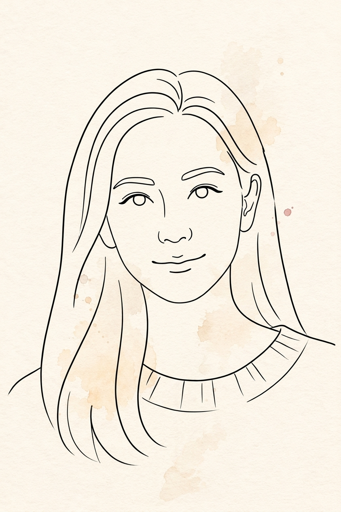

我的網頁作品集 🎈
集結空間設計思維、有趣的前端互動應用、本地資安防護工具與旅行生活提案。

Wen 曾
建築空間設計師・前端應用創作者美學視覺 ✦ 3D空間建模 ✦ 互動體驗 ✦ 實戰AI應用
具有豐富的建築與室內空間設計、視覺設計與 3D 建模實戰歷練。曾參與美國紐約室內設計案、知名建築師事務所及工研院前瞻專案。擅長將嚴謹工程結構思維與柔和溫暖的視覺美感結合，打造有溫度又實用的數位體驗。
🎪 作品展示目錄
每件作品均附專屬小圖卡、100字簡介、使用 API 與應用情境
Wen 建築與視覺作品集
01-portfolio / portfolio.html本作品集呈現 Wen 於建築設計、室內裝修、視覺規劃與 3D 建模的多維度專業實力。彙整美國紐約室內專案、建築師事務所及工研院前瞻計畫，結合細膩美學與嚴謹工程思維，全方位呈現專業履歷與作品。
個人求職面試、建築與室內空間設計提案接洽、大型實務案場成果展示。
現金流量表分析儀表板
02-apps / cash-flow-analysis專為投資分析與財務管理量身打造的視覺化看板。清晰拆解企業營業活動、投資活動與籌資活動之現金流動走向，直觀掌握自由現金流與期末現金餘額水位，幫助投資人快速洞察企業獲利體質與潛在營運風險。
股市投資人財報健康度評估、企業高層季度營運資金監控、商業財務分析與決策模擬。
霓虹數字彈珠 (Neon 2048)
02-apps / neon-2048-merge融合賽博龐克發光視覺與物理下落機制的數字合成彈珠遊戲。玩家透過點擊發射帶有數字的霓虹彈珠，碰撞相同數值即可觸發流暢融合動畫與連擊音效，挑戰合成 2048 極限高分，帶給玩家極致的視覺解壓快感。
行動手機端休閒娛樂、手眼協調敏捷度鍛鍊、碎片化時間放鬆與街機復古遊戲體驗。
楊老大飲料店點餐系統
02-apps / drink-shop-order專為手搖茶飲設計的直覺式點餐介面。支援茶飲選品、甜度、冰塊、珍珠椰果等配料細緻客製化規格，並具備即時計算購物車金額與送出訂單明細功能，介面親切流暢，完美模擬真實門市流暢點餐體驗。
實體手搖茶飲門市掃碼自助手點餐、外帶自取預訂介面、餐飲品牌點餐結帳原型驗證。
台灣即時天氣觀測
02-apps / taiwan-live-weather整合台灣中央氣象署即時公開觀測數據，即刻呈現各縣市氣溫、降雨機率、風向與體感指數。介面搭配動態氣象圖示與細緻漸層背景，讓使用者一指輕滑即可掌握全台最新天氣變化，出行與防雨一手掌握。
每日晨間出門穿著與攜傘決策、假日戶外露營或健行天候預測、跨縣市商務出差氣溫速查。
歡樂幸運大抽獎
02-apps / party-lucky-draw充滿節慶歡樂氣氛的活動抽獎神器。支援主辦方自由匯入自訂名單與獎項內容，具備炫麗旋轉光效、緊張倒數音效與漫天彩帶慶祝特效，並能即時記錄已中獎人員防重複，輕鬆炒熱派對現場最高潮氣氛。
企業年終尾牙春酒、校園班級社團團康聯誼、線上社群直播抽獎贈品互動現場。
企業級資料去識別化工具
03-tools / data-anonymizer-pro專為資安合規打造的高效資料去識別化工具。完全於使用者本地瀏覽器端運作，可精準辨識並遮蔽身分證字號、手機號碼、電子信箱及銀行帳號等多種個資，零資料外傳風險，確保企業與個人在處理機敏數據時的隱私安全。
企業內部資安個資脫敏、交件前客戶隱私遮蔽、AI 提示詞 (LLM Prompt) 機密個資安全過濾。
本地端個資假名化工具
03-tools / data-pseudonymizer提供彈性假名替換機制的本地端資料轉換工具。透過自定義對照映射或雜湊代號，將真實姓名與機密識別碼轉換為虛擬代稱，並保留文字結構關聯性，便於後續統計分析與模型訓練，兼顧資料隱私性與內容可讀性。
法律案卷個資去名化、醫療學術統計去標識、向生成式 AI 諮詢前內部專案名稱代換。
專注倒數計時器
03-tools / focus-countdown-timer簡約純粹的專注力計時輔助工具。採用醒目大字體介面與低干擾配色，支援快速設定倒數時間、自訂提醒音效與進度環圈動畫，幫助使用者在工作、閱讀或冥想中隔絕雜訊，進入高效的心流專注狀態。
個人番茄鐘專注工作衝刺、讀書模擬考試限時測驗、會議簡報發言倒數管理。
明星桌布數字時鐘
03-tools / wallpaper-clock融合視覺美學的高清桌布數位時鐘。支援全螢幕顯示、精美背景圖片切換與俐落的數位時間跳動，提供沉浸舒適的桌面視覺體驗，適合將舊手機或平板立於案頭化身為質感十足的科技氛圍鐘。
辦公桌立式平板時間顯示、螢幕休眠保護兼時鐘、臥室夜間微光極簡數字鬧鐘。
台南兩天一夜慢活之旅
04-travel / tainan-2day-slow精選台南古都精華的慢步調行程指南。詳細串聯神農街歷史老屋、國華街經典小吃、美術館藝文巡禮與特色巷弄咖啡館，並提供具體交通建議與停留節奏，讓旅人能放慢腳步，深刻品味古城獨有的生活風情。
週末情侶小旅行、文青獨旅散步、府城在地排隊美食地圖即時導覽。
探索茨城・自然與文化指南
04-travel / ibaraki-guide專為日本關東深度漫遊量身撰寫的旅遊指引。深入介紹常陸海濱公園琉璃唐草花海、日本三名園之偕樂園、大洗磯前神社海上鳥居等知名美景，並涵蓋特色伴手禮與交通指南，提供一目了然且圖文並茂的行前參考。
日本東京近郊自由行攻略規劃、季節花海攝影景點指引、深度日式庭園古蹟巡禮。
Beneath The Current
05-media / ambient-music.mp4沉浸式環境音效與視覺動態影片。透過低頻流動的合成器聲響與深海流光意象，營造安寧靜謐的心靈沉思空間，能有效隔絕外界環境嘈雜干擾，帶來深層平靜，適合專案開發與專注衝刺時播放。
程式開發與深度寫作背景伴奏音樂、瑜珈冥想白噪音營造、放鬆減壓沉浸式體驗。